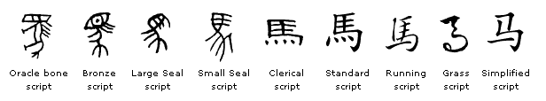

Yunfei (first name) Ma (last name), or Ma Yunfei, is written in simplified Chinese as 马云飞 and traditional Chinese as 馬雲飛.
When combined, 马云飞 (Mǎ Yún Fēi) can be interpreted as a poetic expression of ambition, freedom, and the pursuit of dreams beyond the ordinary. The name conjures images of a horse soaring through the clouds, a metaphor for an individual who strives to transcend limitations and achieve great heights. It reflects a dynamic and ambitious spirit, aligned with traditional Chinese values of perseverance, aspiration, and the harmonious balance between heaven and earth.
The image above was generated by DALL·E.
The name also relates to the Greek mythological character Pegasus (Πήγασος) according to my dad. Pegasus is divine horse in Greek mythology symbolizing poetic inspiration and the ability to transcend earthly boundaries. The story is about hero Bellerophon and his quest to defeat the fearsome Chimera. With the help of a golden bridle given by the goddess Athena, Bellerophon captures the divine winged horse Pegasus. Riding Pegasus, Bellerophon soars above the Chimera and successfully attacks it from the air, emerging victorious. This partnership enables Bellerophon to accomplish many other heroic feats, showcasing their combined strength and courage.
However, Bellerophon’s hubris leads him to attempt to fly to Mount Olympus, angering the gods. Zeus sends a gadfly to sting Pegasus, causing him to buck and throw Bellerophon back to Earth. While Bellerophon suffers the consequences of his arrogance, Pegasus continues to fly to Olympus, where he is welcomed by the gods and becomes a bearer of Zeus’s thunderbolts.
Bellerophon riding Pegasus and slaying the Chimera, central medallion of a Gallo-Roman mosaic from Autun, Musée Rolin, 2nd to 3rd century AD.
The character 马 (Mǎ) has undergone significant evolution in Chinese writing. Originally depicted as a pictograph in ancient oracle bone script (甲骨文) around 1200-1050 BCE, it resembled a horse with a mane and four legs. Over time, in the bronze script (金文) and seal script (篆书) used during the Shang and Zhou dynasties, the character became more stylized but retained its essential features. With the advent of the clerical script (隶书) during the Han dynasty, the character’s form became more rectangular and structured. Finally, in the regular script (楷书), which emerged during the late Han dynasty and is still used today, the character simplified further, losing detailed features but maintaining the basic elements that hint at a horse’s form.
 The evolution of the character 马